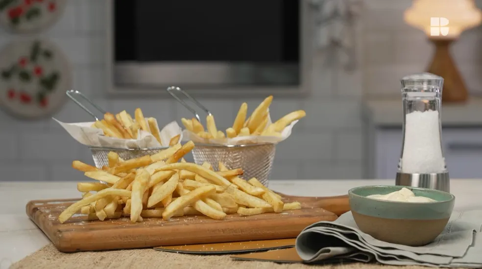

Batata frita caseira

Já imaginou reproduzir em casa aquela batata frita sequinha e crocante de fast food?
Agora é possível! Receita de batata frita caseira é prática e muito fácil de fazer, ficando pronta em
menos de uma hora.
Ingredientes
Batata frita caseira:
- 650 gramas batata-inglesa cortada em palito
- 60 gramas de amido de milho
Modo de Preparo
Batata frita caseira:
- Escalde a batatas por 2 minutos em água quente.
- Retire da água quente e passe direto para água com gelo, para parar o processo de cozimento.
- Escorra assim que esfriar.
- Coloque as batatas numa assadeira e passe amido de milho.
- Cubra com plástico e leve para o congelador.
- Frite as batatas em óleo bem quente.